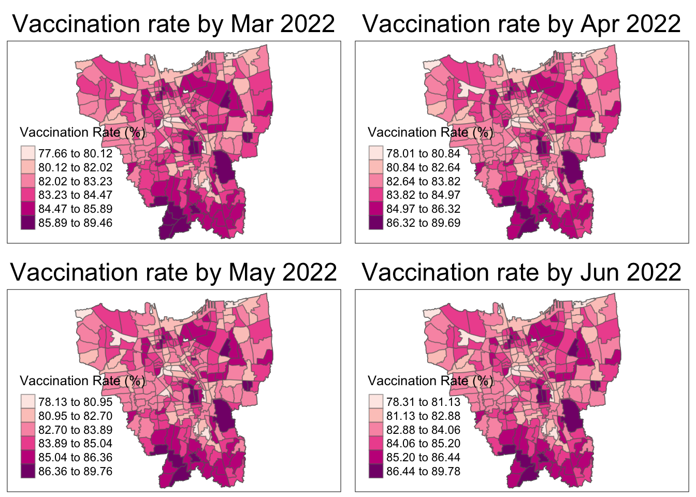

pacman::p_load(sf, maptools, tmap, kableExtra, readxl, lubridate, tidyr, tidyverse)Take Home Exercise 2
1.0 Overview
1.1 Background
1.2 Task
Choropleth Mapping and Analysis
Local Gi* Analysis
Emerging Hot Spot Analysis (EHSA)
2.0 Setup
2.1 Import Packages
sf - Used for handling geospatial data
tidyVerse - Used for data transformation and presentation
tmap, maptools, kableExtra - Used for visualizing dataframes and plots
spatstat - Used for point-pattern analysis
sfdep - Used for functions not in spdep
raster - Used to handle gridded spatial data
3.0 Data Wrangling
3.1 Datasets Used
| Type | Name |
|---|---|
| Geopsatial | BATAS_DESA_DESEMBER_2019_DUKCAPIL_DKI_JAKARTA |
| Aspatial | DKI Jakarta Provincial Vaccination Open Data |
3.2 Geospatial Data
3.2.1 Load Data
Import Geospatial data and filter out Jakarta. Transform WGS 48 coordinate system to projected coordinate system with Nigeria’s ESPG - 26293
bd_jakarta <- st_read(dsn="data/geospatial",
layer="BATAS_DESA_DESEMBER_2019_DUKCAPIL_DKI_JAKARTA")Reading layer `BATAS_DESA_DESEMBER_2019_DUKCAPIL_DKI_JAKARTA' from data source
`/Users/shambhavigoenka/Desktop/School/Geo/IS415-GAA/take_home_ex/take_home_ex02/data/geospatial'
using driver `ESRI Shapefile'
Simple feature collection with 269 features and 161 fields
Geometry type: MULTIPOLYGON
Dimension: XY
Bounding box: xmin: 106.3831 ymin: -6.370815 xmax: 106.9728 ymax: -5.184322
Geodetic CRS: WGS 84glimpse(bd_jakarta)Rows: 269
Columns: 162
$ OBJECT_ID <dbl> 25477, 25478, 25397, 25400, 25378, 25379, 25390, 25382, 253…
$ KODE_DESA <chr> "3173031006", "3173031007", "3171031003", "3171031006", "31…
$ DESA <chr> "KEAGUNGAN", "GLODOK", "HARAPAN MULIA", "CEMPAKA BARU", "PU…
$ KODE <dbl> 317303, 317303, 317103, 317103, 310101, 310101, 317102, 310…
$ PROVINSI <chr> "DKI JAKARTA", "DKI JAKARTA", "DKI JAKARTA", "DKI JAKARTA",…
$ KAB_KOTA <chr> "JAKARTA BARAT", "JAKARTA BARAT", "JAKARTA PUSAT", "JAKARTA…
$ KECAMATAN <chr> "TAMAN SARI", "TAMAN SARI", "KEMAYORAN", "KEMAYORAN", "KEPU…
$ DESA_KELUR <chr> "KEAGUNGAN", "GLODOK", "HARAPAN MULIA", "CEMPAKA BARU", "PU…
$ JUMLAH_PEN <dbl> 21609, 9069, 29085, 41913, 6947, 7059, 15793, 5891, 33383, …
$ JUMLAH_KK <dbl> 7255, 3273, 9217, 13766, 2026, 2056, 5599, 1658, 11276, 128…
$ LUAS_WILAY <dbl> 0.36, 0.37, 0.53, 0.97, 0.93, 0.95, 1.76, 1.14, 0.47, 1.31,…
$ KEPADATAN <dbl> 60504, 24527, 54465, 42993, 7497, 7401, 8971, 5156, 71628, …
$ PERPINDAHA <dbl> 102, 25, 131, 170, 17, 26, 58, 13, 113, 178, 13, 87, 56, 12…
$ JUMLAH_MEN <dbl> 68, 52, 104, 151, 14, 32, 36, 10, 60, 92, 5, 83, 21, 70, 93…
$ PERUBAHAN <dbl> 20464, 8724, 27497, 38323, 6853, 6993, 15006, 5807, 31014, …
$ WAJIB_KTP <dbl> 16027, 7375, 20926, 30264, 4775, 4812, 12559, 3989, 24784, …
$ SILAM <dbl> 15735, 1842, 26328, 36813, 6941, 7057, 7401, 5891, 23057, 2…
$ KRISTEN <dbl> 2042, 2041, 1710, 3392, 6, 0, 3696, 0, 4058, 5130, 1, 3061,…
$ KHATOLIK <dbl> 927, 1460, 531, 1082, 0, 0, 1602, 0, 2100, 2575, 0, 1838, 7…
$ HINDU <dbl> 15, 9, 42, 127, 0, 0, 622, 0, 25, 27, 0, 9, 115, 47, 382, 7…
$ BUDHA <dbl> 2888, 3716, 469, 495, 0, 2, 2462, 0, 4134, 4740, 5, 1559, 3…
$ KONGHUCU <dbl> 2, 1, 5, 1, 0, 0, 10, 0, 9, 10, 0, 4, 1, 1, 4, 0, 2, 0, 0, …
$ KEPERCAYAA <dbl> 0, 0, 0, 3, 0, 0, 0, 0, 0, 0, 0, 2, 0, 22, 0, 3, 3, 0, 0, 0…
$ PRIA <dbl> 11049, 4404, 14696, 21063, 3547, 3551, 7833, 2954, 16887, 1…
$ WANITA <dbl> 10560, 4665, 14389, 20850, 3400, 3508, 7960, 2937, 16496, 1…
$ BELUM_KAWI <dbl> 10193, 4240, 14022, 20336, 3366, 3334, 7578, 2836, 15860, 1…
$ KAWIN <dbl> 10652, 4364, 13450, 19487, 3224, 3404, 7321, 2791, 15945, 1…
$ CERAI_HIDU <dbl> 255, 136, 430, 523, 101, 80, 217, 44, 381, 476, 39, 305, 10…
$ CERAI_MATI <dbl> 509, 329, 1183, 1567, 256, 241, 677, 220, 1197, 993, 79, 90…
$ U0 <dbl> 1572, 438, 2232, 3092, 640, 648, 802, 585, 2220, 2399, 376,…
$ U5 <dbl> 1751, 545, 2515, 3657, 645, 684, 995, 588, 2687, 2953, 331,…
$ U10 <dbl> 1703, 524, 2461, 3501, 620, 630, 1016, 513, 2653, 2754, 309…
$ U15 <dbl> 1493, 521, 2318, 3486, 669, 671, 1106, 548, 2549, 2666, 328…
$ U20 <dbl> 1542, 543, 2113, 3098, 619, 609, 1081, 491, 2313, 2515, 290…
$ U25 <dbl> 1665, 628, 2170, 3024, 639, 582, 1002, 523, 2446, 2725, 325…
$ U30 <dbl> 1819, 691, 2363, 3188, 564, 592, 1236, 478, 2735, 3122, 329…
$ U35 <dbl> 1932, 782, 2595, 3662, 590, 572, 1422, 504, 3034, 3385, 317…
$ U40 <dbl> 1828, 675, 2371, 3507, 480, 486, 1200, 397, 2689, 3037, 250…
$ U45 <dbl> 1600, 607, 2250, 3391, 421, 457, 1163, 365, 2470, 2597, 206…
$ U50 <dbl> 1408, 619, 1779, 2696, 346, 369, 1099, 288, 2129, 2282, 134…
$ U55 <dbl> 1146, 602, 1379, 1909, 252, 318, 979, 235, 1843, 1930, 129,…
$ U60 <dbl> 836, 614, 1054, 1397, 197, 211, 880, 162, 1386, 1394, 75, 9…
$ U65 <dbl> 587, 555, 654, 970, 122, 114, 747, 111, 958, 932, 50, 706, …
$ U70 <dbl> 312, 311, 411, 631, 69, 55, 488, 65, 554, 573, 38, 412, 129…
$ U75 <dbl> 415, 414, 420, 704, 74, 61, 577, 38, 717, 642, 37, 528, 125…
$ TIDAK_BELU <dbl> 3426, 1200, 4935, 7328, 1306, 1318, 2121, 973, 5075, 6089, …
$ BELUM_TAMA <dbl> 1964, 481, 2610, 3763, 730, 676, 1278, 732, 3241, 3184, 383…
$ TAMAT_SD <dbl> 2265, 655, 2346, 2950, 1518, 2054, 1169, 1266, 4424, 3620, …
$ SLTP <dbl> 3660, 1414, 3167, 5138, 906, 1357, 2236, 852, 5858, 6159, 5…
$ SLTA <dbl> 8463, 3734, 12172, 16320, 2040, 1380, 5993, 1570, 12448, 14…
$ DIPLOMA_I <dbl> 81, 23, 84, 179, 22, 15, 43, 36, 85, 83, 4, 63, 27, 79, 110…
$ DIPLOMA_II <dbl> 428, 273, 1121, 1718, 101, 59, 573, 97, 604, 740, 25, 734, …
$ DIPLOMA_IV <dbl> 1244, 1241, 2477, 4181, 314, 191, 2199, 357, 1582, 1850, 83…
$ STRATA_II <dbl> 74, 46, 166, 315, 10, 8, 168, 8, 63, 92, 5, 174, 125, 122, …
$ STRATA_III <dbl> 4, 2, 7, 21, 0, 1, 13, 0, 3, 9, 0, 16, 8, 7, 75, 49, 65, 14…
$ BELUM_TIDA <dbl> 3927, 1388, 5335, 8105, 1788, 1627, 2676, 1129, 5985, 6820,…
$ APARATUR_P <dbl> 81, 10, 513, 931, 246, 75, 156, 160, 132, 79, 23, 145, 369,…
$ TENAGA_PEN <dbl> 70, 43, 288, 402, 130, 93, 81, 123, 123, 73, 45, 109, 30, 1…
$ WIRASWASTA <dbl> 8974, 3832, 10662, 14925, 788, 728, 6145, 819, 12968, 14714…
$ PERTANIAN <dbl> 1, 0, 1, 3, 2, 2, 1, 3, 2, 5, 1, 1, 0, 0, 2, 5, 2, 1, 13, 4…
$ NELAYAN <dbl> 0, 0, 2, 0, 960, 1126, 1, 761, 1, 2, 673, 0, 0, 0, 0, 0, 2,…
$ AGAMA_DAN <dbl> 6, 6, 5, 40, 0, 0, 49, 2, 10, 11, 0, 54, 15, 16, 21, 14, 17…
$ PELAJAR_MA <dbl> 4018, 1701, 6214, 9068, 1342, 1576, 3135, 1501, 6823, 6866,…
$ TENAGA_KES <dbl> 28, 29, 80, 142, 34, 26, 60, 11, 48, 55, 16, 68, 89, 93, 28…
$ PENSIUNAN <dbl> 57, 50, 276, 498, 20, 7, 59, 14, 56, 75, 2, 97, 53, 146, 57…
$ LAINNYA <dbl> 4447, 2010, 5709, 7799, 1637, 1799, 3430, 1368, 7235, 7206,…
$ GENERATED <chr> "30 Juni 2019", "30 Juni 2019", "30 Juni 2019", "30 Juni 20…
$ KODE_DES_1 <chr> "3173031006", "3173031007", "3171031003", "3171031006", "31…
$ BELUM_ <dbl> 3099, 1032, 4830, 7355, 1663, 1704, 2390, 1213, 5330, 5605,…
$ MENGUR_ <dbl> 4447, 2026, 5692, 7692, 1576, 1731, 3500, 1323, 7306, 7042,…
$ PELAJAR_ <dbl> 3254, 1506, 6429, 8957, 1476, 1469, 3185, 1223, 6993, 6858,…
$ PENSIUNA_1 <dbl> 80, 65, 322, 603, 24, 8, 70, 20, 75, 97, 2, 132, 67, 165, 6…
$ PEGAWAI_ <dbl> 48, 5, 366, 612, 223, 72, 65, 143, 73, 48, 15, 89, 91, 174,…
$ TENTARA <dbl> 4, 0, 41, 57, 3, 0, 74, 1, 20, 12, 2, 11, 90, 340, 41, 52, …
$ KEPOLISIAN <dbl> 10, 1, 16, 42, 11, 8, 2, 9, 17, 7, 3, 9, 165, 15, 17, 28, 1…
$ PERDAG_ <dbl> 31, 5, 1, 3, 6, 1, 2, 4, 3, 1, 4, 0, 1, 2, 9, 2, 8, 2, 5, 9…
$ PETANI <dbl> 0, 0, 1, 2, 0, 1, 1, 0, 1, 1, 1, 2, 0, 0, 1, 2, 0, 1, 6, 1,…
$ PETERN_ <dbl> 0, 0, 0, 0, 0, 0, 0, 1, 0, 0, 0, 0, 0, 0, 0, 0, 0, 0, 0, 0,…
$ NELAYAN_1 <dbl> 1, 0, 1, 0, 914, 1071, 0, 794, 0, 1, 663, 0, 0, 0, 0, 0, 2,…
$ INDUSTR_ <dbl> 7, 3, 4, 3, 1, 3, 0, 0, 1, 7, 0, 0, 2, 2, 1, 3, 12, 1, 8, 4…
$ KONSTR_ <dbl> 3, 0, 2, 6, 3, 8, 1, 6, 1, 5, 10, 0, 2, 5, 7, 4, 7, 1, 6, 2…
$ TRANSP_ <dbl> 2, 0, 7, 4, 0, 0, 0, 0, 0, 3, 0, 0, 0, 0, 6, 3, 2, 1, 2, 5,…
$ KARYAW_ <dbl> 6735, 3034, 7347, 10185, 237, 264, 4319, 184, 9405, 10844, …
$ KARYAW1 <dbl> 9, 2, 74, 231, 4, 0, 16, 1, 13, 10, 1, 24, 17, 29, 187, 246…
$ KARYAW1_1 <dbl> 0, 0, 5, 15, 0, 0, 0, 1, 0, 1, 0, 0, 2, 4, 7, 9, 3, 1, 6, 5…
$ KARYAW1_12 <dbl> 23, 4, 25, 35, 141, 50, 16, 157, 6, 9, 40, 11, 11, 15, 22, …
$ BURUH <dbl> 515, 155, 971, 636, 63, 218, 265, 55, 1085, 652, 17, 357, 2…
$ BURUH_ <dbl> 1, 0, 0, 0, 2, 1, 1, 0, 0, 1, 1, 0, 0, 0, 1, 2, 1, 0, 1, 1,…
$ BURUH1 <dbl> 0, 0, 1, 0, 1, 25, 0, 2, 0, 1, 1, 0, 0, 0, 0, 0, 0, 0, 0, 0…
$ BURUH1_1 <dbl> 0, 0, 0, 0, 0, 0, 0, 0, 0, 0, 0, 0, 0, 0, 0, 0, 0, 0, 1, 0,…
$ PEMBANT_ <dbl> 1, 1, 4, 1, 1, 0, 7, 0, 5, 1, 0, 6, 1, 10, 11, 9, 8, 3, 4, …
$ TUKANG <dbl> 0, 0, 0, 0, 0, 0, 0, 0, 0, 1, 0, 0, 0, 0, 0, 1, 0, 0, 0, 0,…
$ TUKANG_1 <dbl> 1, 0, 0, 0, 0, 0, 0, 0, 0, 0, 0, 0, 0, 0, 0, 0, 0, 0, 0, 0,…
$ TUKANG_12 <dbl> 0, 0, 0, 0, 0, 0, 0, 0, 0, 0, 0, 0, 0, 0, 0, 0, 0, 0, 0, 0,…
$ TUKANG__13 <dbl> 1, 1, 0, 1, 0, 1, 0, 0, 0, 1, 0, 0, 0, 1, 1, 0, 0, 0, 0, 0,…
$ TUKANG__14 <dbl> 0, 0, 0, 0, 0, 0, 0, 0, 0, 0, 0, 0, 0, 0, 0, 0, 0, 0, 0, 0,…
$ TUKANG__15 <dbl> 1, 0, 0, 1, 0, 0, 0, 0, 0, 1, 0, 0, 0, 0, 0, 0, 0, 0, 1, 1,…
$ TUKANG__16 <dbl> 7, 4, 10, 14, 0, 0, 2, 0, 7, 8, 0, 8, 1, 0, 3, 2, 2, 0, 17,…
$ TUKANG__17 <dbl> 1, 0, 0, 0, 0, 0, 0, 0, 0, 1, 0, 0, 0, 0, 0, 0, 0, 0, 0, 0,…
$ PENATA <dbl> 0, 0, 0, 0, 0, 0, 1, 0, 0, 0, 0, 0, 1, 0, 0, 0, 0, 0, 0, 0,…
$ PENATA_ <dbl> 0, 0, 0, 0, 0, 0, 0, 0, 0, 0, 0, 0, 0, 0, 0, 0, 0, 0, 0, 0,…
$ PENATA1_1 <dbl> 0, 0, 0, 1, 0, 0, 0, 0, 0, 1, 0, 2, 0, 1, 0, 0, 0, 0, 0, 0,…
$ MEKANIK <dbl> 11, 1, 10, 8, 0, 0, 4, 0, 7, 8, 0, 9, 0, 15, 10, 10, 3, 0, …
$ SENIMAN_ <dbl> 4, 0, 12, 28, 0, 0, 2, 0, 3, 4, 0, 9, 6, 7, 14, 13, 17, 22,…
$ TABIB <dbl> 1, 0, 0, 0, 0, 0, 1, 0, 0, 1, 0, 0, 0, 0, 0, 1, 0, 0, 0, 0,…
$ PARAJI_ <dbl> 0, 0, 0, 0, 0, 0, 0, 0, 0, 0, 0, 0, 0, 0, 0, 0, 0, 0, 0, 0,…
$ PERANCA_ <dbl> 0, 0, 0, 0, 0, 0, 0, 0, 0, 0, 0, 1, 0, 2, 1, 0, 1, 2, 0, 0,…
$ PENTER_ <dbl> 1, 0, 0, 0, 0, 0, 1, 0, 0, 0, 0, 0, 0, 0, 2, 0, 2, 0, 0, 0,…
$ IMAM_M <dbl> 0, 0, 0, 0, 0, 0, 0, 0, 0, 0, 0, 0, 0, 0, 0, 0, 0, 0, 0, 0,…
$ PENDETA <dbl> 2, 4, 5, 33, 0, 0, 20, 0, 10, 8, 0, 30, 14, 14, 18, 12, 1, …
$ PASTOR <dbl> 0, 1, 0, 1, 0, 0, 8, 0, 0, 0, 0, 23, 0, 0, 0, 0, 2, 0, 0, 0…
$ WARTAWAN <dbl> 7, 1, 16, 27, 0, 0, 4, 0, 8, 6, 0, 9, 5, 9, 26, 30, 11, 7, …
$ USTADZ <dbl> 6, 1, 1, 5, 1, 0, 0, 0, 0, 1, 0, 0, 0, 1, 0, 0, 0, 0, 0, 0,…
$ JURU_M <dbl> 0, 0, 0, 0, 0, 0, 0, 0, 0, 0, 0, 0, 0, 0, 1, 2, 0, 0, 0, 0,…
$ PROMOT <dbl> 0, 0, 0, 0, 0, 0, 0, 0, 0, 0, 0, 0, 0, 0, 0, 0, 0, 0, 0, 0,…
$ ANGGOTA_ <dbl> 0, 1, 0, 0, 0, 0, 0, 0, 1, 0, 0, 1, 0, 0, 2, 1, 2, 1, 0, 0,…
$ ANGGOTA1 <dbl> 0, 0, 0, 0, 0, 0, 0, 0, 0, 0, 0, 0, 0, 0, 0, 1, 0, 0, 0, 1,…
$ ANGGOTA1_1 <dbl> 0, 0, 0, 0, 0, 0, 0, 0, 0, 0, 0, 0, 0, 0, 0, 0, 0, 0, 0, 0,…
$ PRESIDEN <dbl> 0, 0, 0, 0, 0, 0, 0, 0, 0, 0, 0, 0, 0, 0, 0, 0, 0, 0, 0, 0,…
$ WAKIL_PRES <dbl> 0, 0, 0, 0, 0, 0, 0, 0, 0, 0, 0, 0, 0, 0, 0, 0, 1, 0, 0, 0,…
$ ANGGOTA1_2 <dbl> 0, 0, 0, 0, 0, 0, 0, 0, 0, 0, 0, 0, 0, 0, 1, 0, 0, 0, 0, 0,…
$ ANGGOTA1_3 <dbl> 0, 0, 0, 0, 0, 0, 0, 0, 0, 0, 0, 0, 0, 0, 1, 0, 0, 0, 0, 0,…
$ DUTA_B <dbl> 0, 0, 0, 0, 0, 0, 0, 0, 0, 0, 0, 0, 0, 0, 0, 0, 1, 0, 0, 0,…
$ GUBERNUR <dbl> 0, 0, 0, 0, 0, 0, 0, 0, 0, 0, 0, 0, 0, 0, 0, 0, 1, 0, 0, 0,…
$ WAKIL_GUBE <dbl> 0, 0, 0, 0, 0, 0, 0, 0, 0, 0, 0, 0, 0, 0, 0, 0, 0, 0, 0, 0,…
$ BUPATI <dbl> 0, 0, 0, 0, 0, 0, 0, 0, 0, 0, 0, 0, 0, 0, 0, 0, 0, 0, 0, 0,…
$ WAKIL_BUPA <dbl> 0, 0, 0, 0, 0, 0, 0, 0, 0, 0, 0, 0, 0, 0, 0, 0, 0, 0, 0, 0,…
$ WALIKOTA <dbl> 0, 0, 0, 0, 0, 0, 0, 0, 0, 0, 0, 0, 0, 0, 0, 0, 0, 0, 0, 0,…
$ WAKIL_WALI <dbl> 0, 0, 0, 0, 0, 0, 0, 0, 0, 0, 0, 0, 0, 0, 0, 0, 0, 0, 0, 0,…
$ ANGGOTA1_4 <dbl> 0, 0, 0, 0, 0, 0, 0, 0, 0, 0, 0, 0, 0, 0, 3, 0, 1, 0, 0, 1,…
$ ANGGOTA1_5 <dbl> 0, 0, 0, 0, 0, 0, 0, 0, 0, 0, 0, 0, 0, 0, 0, 0, 0, 0, 0, 1,…
$ DOSEN <dbl> 3, 2, 23, 36, 1, 2, 11, 0, 3, 5, 0, 14, 6, 28, 69, 73, 58, …
$ GURU <dbl> 72, 40, 272, 378, 118, 72, 69, 116, 126, 71, 36, 97, 23, 10…
$ PILOT <dbl> 1, 0, 2, 3, 0, 0, 0, 0, 0, 0, 0, 0, 0, 0, 3, 3, 1, 0, 0, 0,…
$ PENGACARA_ <dbl> 4, 1, 8, 22, 0, 0, 5, 0, 5, 4, 0, 4, 3, 12, 24, 26, 40, 13,…
$ NOTARIS <dbl> 0, 0, 3, 5, 0, 0, 4, 0, 0, 0, 0, 5, 0, 5, 10, 3, 7, 1, 0, 4…
$ ARSITEK <dbl> 1, 0, 2, 3, 0, 0, 2, 0, 0, 0, 0, 4, 1, 2, 7, 3, 9, 2, 0, 4,…
$ AKUNTA_ <dbl> 1, 0, 0, 0, 0, 0, 0, 0, 0, 0, 0, 2, 0, 1, 0, 0, 2, 0, 3, 1,…
$ KONSUL_ <dbl> 1, 0, 2, 11, 0, 0, 4, 0, 0, 0, 0, 6, 2, 3, 10, 8, 12, 2, 1,…
$ DOKTER <dbl> 16, 32, 35, 68, 0, 1, 63, 0, 27, 32, 1, 63, 48, 60, 236, 12…
$ BIDAN <dbl> 3, 1, 9, 18, 12, 8, 1, 3, 3, 3, 7, 3, 10, 10, 7, 2, 3, 2, 1…
$ PERAWAT <dbl> 7, 0, 25, 44, 12, 10, 3, 6, 12, 20, 6, 7, 26, 16, 21, 20, 9…
$ APOTEK_ <dbl> 0, 0, 2, 3, 1, 0, 0, 0, 1, 2, 0, 1, 2, 3, 3, 3, 3, 1, 0, 1,…
$ PSIKIATER <dbl> 0, 0, 1, 0, 0, 0, 0, 0, 0, 0, 0, 0, 1, 0, 3, 2, 1, 0, 0, 0,…
$ PENYIA_ <dbl> 0, 0, 0, 0, 0, 0, 0, 0, 0, 0, 0, 0, 0, 0, 2, 0, 0, 0, 0, 0,…
$ PENYIA1 <dbl> 0, 0, 0, 0, 0, 0, 0, 0, 0, 0, 0, 0, 0, 0, 0, 0, 0, 0, 1, 0,…
$ PELAUT <dbl> 0, 0, 6, 16, 1, 1, 0, 14, 2, 4, 1, 2, 4, 2, 10, 13, 2, 0, 3…
$ PENELITI <dbl> 0, 1, 0, 0, 0, 0, 1, 0, 0, 0, 0, 0, 0, 0, 3, 0, 1, 0, 2, 0,…
$ SOPIR <dbl> 65, 3, 94, 123, 0, 1, 61, 0, 76, 79, 0, 63, 44, 101, 71, 59…
$ PIALAN <dbl> 0, 0, 0, 0, 0, 0, 0, 0, 0, 0, 0, 0, 0, 0, 0, 0, 0, 0, 0, 0,…
$ PARANORMAL <dbl> 0, 0, 0, 0, 0, 0, 0, 0, 0, 1, 0, 0, 0, 0, 0, 1, 0, 0, 0, 0,…
$ PEDAGA_ <dbl> 379, 126, 321, 562, 11, 10, 412, 15, 202, 225, 0, 271, 212,…
$ PERANG_ <dbl> 0, 0, 0, 0, 0, 0, 0, 0, 0, 0, 0, 0, 0, 0, 0, 0, 0, 0, 0, 1,…
$ KEPALA_ <dbl> 0, 0, 0, 0, 0, 0, 0, 0, 0, 0, 0, 0, 0, 0, 0, 0, 0, 0, 0, 0,…
$ BIARAW_ <dbl> 0, 1, 0, 0, 0, 0, 22, 0, 3, 0, 0, 2, 1, 0, 4, 0, 17, 1, 0, …
$ WIRASWAST_ <dbl> 1370, 611, 1723, 3099, 131, 119, 1128, 259, 2321, 2677, 79,…
$ LAINNYA_12 <dbl> 94, 57, 82, 122, 12, 10, 41, 6, 89, 158, 24, 37, 15, 94, 12…
$ LUAS_DESA <dbl> 25476, 25477, 25396, 25399, 25377, 25378, 25389, 25381, 253…
$ KODE_DES_3 <chr> "3173031006", "3173031007", "3171031003", "3171031006", "31…
$ DESA_KEL_1 <chr> "KEAGUNGAN", "GLODOK", "HARAPAN MULIA", "CEMPAKA BARU", "PU…
$ KODE_12 <dbl> 317303, 317303, 317103, 317103, 310101, 310101, 317102, 310…
$ geometry <MULTIPOLYGON [°]> MULTIPOLYGON (((106.8164 -6..., MULTIPOLYGON (…plot(st_geometry(bd_jakarta))3.2.2 Data Preprocessing
3.2.2.1 Invalid Geometries
length(which(st_is_valid(bd_jakarta) == FALSE))[1] 0Everything is valid
3.2.2.2 Exclude redundant fields
Exclude all data except Municipality, District name, District Code, Sub-district Code, Sub-district name, Total Population and geometry of the regions.
bd_jakarta <- bd_jakarta %>%
select(2:4, 6:7, 9,)3.2.2.3 Rename from Bahasa Indonesia to English
| Index | Original Name | Translated Name |
|---|---|---|
| 2 | KODE_DESA | Sub_District_Code |
| 3 | DESA | Sub_District |
| 4 | KODE | District_Code |
| 6 | KAB_KOTA | Municipality |
| 7 | KECAMATAN | District |
| 9 | JUMLAH_PEN | Total_Population |
Code
bd_jakarta <- bd_jakarta %>%
dplyr::rename(
Municipality=KAB_KOTA,
District=KECAMATAN,
District_Code=KODE,
Sub_District=DESA,
Sub_District_Code=KODE_DESA,
Total_Population=JUMLAH_PEN
)3.2.2.4 Handle Missing Values
Code
cat("There are", sum(is.na(bd_jakarta)), "missing values in", paste(names(which(colSums(is.na(bd_jakarta))>0)), collapse = ", "))There are 4 missing values in Municipality, DistrictRemove all rows with missing values
bd_jakarta <- na.omit(bd_jakarta)3.2.3 Transform Coordinate System
st_crs(bd_jakarta)Coordinate Reference System:
User input: WGS 84
wkt:
GEOGCRS["WGS 84",
DATUM["World Geodetic System 1984",
ELLIPSOID["WGS 84",6378137,298.257223563,
LENGTHUNIT["metre",1]]],
PRIMEM["Greenwich",0,
ANGLEUNIT["degree",0.0174532925199433]],
CS[ellipsoidal,2],
AXIS["latitude",north,
ORDER[1],
ANGLEUNIT["degree",0.0174532925199433]],
AXIS["longitude",east,
ORDER[2],
ANGLEUNIT["degree",0.0174532925199433]],
ID["EPSG",4326]]Transform the CRS to DGN95, ESPG code 23845
bd_jakarta <- st_transform(bd_jakarta, 23845)st_crs(bd_jakarta)Coordinate Reference System:
User input: EPSG:23845
wkt:
PROJCRS["DGN95 / Indonesia TM-3 zone 54.1",
BASEGEOGCRS["DGN95",
DATUM["Datum Geodesi Nasional 1995",
ELLIPSOID["WGS 84",6378137,298.257223563,
LENGTHUNIT["metre",1]]],
PRIMEM["Greenwich",0,
ANGLEUNIT["degree",0.0174532925199433]],
ID["EPSG",4755]],
CONVERSION["Indonesia TM-3 zone 54.1",
METHOD["Transverse Mercator",
ID["EPSG",9807]],
PARAMETER["Latitude of natural origin",0,
ANGLEUNIT["degree",0.0174532925199433],
ID["EPSG",8801]],
PARAMETER["Longitude of natural origin",139.5,
ANGLEUNIT["degree",0.0174532925199433],
ID["EPSG",8802]],
PARAMETER["Scale factor at natural origin",0.9999,
SCALEUNIT["unity",1],
ID["EPSG",8805]],
PARAMETER["False easting",200000,
LENGTHUNIT["metre",1],
ID["EPSG",8806]],
PARAMETER["False northing",1500000,
LENGTHUNIT["metre",1],
ID["EPSG",8807]]],
CS[Cartesian,2],
AXIS["easting (X)",east,
ORDER[1],
LENGTHUNIT["metre",1]],
AXIS["northing (Y)",north,
ORDER[2],
LENGTHUNIT["metre",1]],
USAGE[
SCOPE["Cadastre."],
AREA["Indonesia - onshore east of 138°E."],
BBOX[-9.19,138,-1.49,141.01]],
ID["EPSG",23845]]3.2.4 Remove outer islands
Based on first glance in View, there are several small islands surrounding the mainland. As this is not relevant to the analysis, they shall be omitted.
# KEPULAUAN SERIBU means thousand islands
bd_jakarta <- filter(bd_jakarta, Municipality != "KEPULAUAN SERIBU")3.2.5 Data Summary
Code
c = length(unique(bd_jakarta$"Municipality"))
d = length(unique(bd_jakarta$"District"))
sd = length(unique(bd_jakarta$"Sub_District"))
cat("There are", c, "unique municipalities,", d, "unique districts, and", sd, "unique sub-districs")There are 5 unique municipalities, 42 unique districts, and 261 unique sub-districsCode
rm(c,d,sd)There a 5 unique cities, 42 unique districts and 261 unique sub-districts.
3.2.5.1 View distribution
Code
df_grp_municipality = bd_jakarta %>% group_by(Municipality) %>%
summarise(total_districts = n(),
.groups = 'drop')
ggplot(df_grp_municipality, aes(x=Municipality, y=total_districts), fill=Municipality) +
geom_bar(stat = "identity",
color="black",
fill="lightblue4") +
ggtitle("Number of Districts by Municipality") +
xlab("Municipality Name") +
ylab("No. of Districts") Code
#cleanup
rm(df_grp_municipality)Code
df_grp_districs = bd_jakarta %>% group_by(District) %>%
summarise(total_sub_districts = n(),
.groups = 'drop')
ggplot(df_grp_districs, aes(x=District, y=total_sub_districts)) +
geom_bar(stat = "identity",
color="black",
fill="lightblue3") +
scale_x_discrete(guide = guide_axis(n.dodge=5))+
ggtitle("Number of Sub-districts by District") +
xlab("District Name") +
ylab("No. of Sub-districts") 
Code
#cleanup
rm(df_grp_districs)3.2.5.2 View by Municipality Divisions
tm_shape(bd_jakarta) +
tm_polygons("Municipality")
3.2.5.2 View by Population
ggplot(bd_jakarta, aes(x=Total_Population)) +
geom_histogram(bins = 10,
color="black",
fill="indianred")
Equal Interval Classification
Code
tmap_mode("plot")
tm_shape(bd_jakarta) +
tm_fill("Total_Population",
style = "equal",
palette = "OrRd") +
tm_layout(main.title = "Distribution by Population") +
tm_borders(alpha = 0.5) 
3.3 Aspatial Data
3.3.1 Load Data
All files were downloaded as “Data Vaksinasi Berbasis Kelurahan (<last date of month> <Indonesian month name> <year>).xlsx” were locally renamed as “<last date of month> <English month name> <year>.xlsx”
#get list of aspatial data files
folder_path <- "data/aspatial"
files <- list.files(folder_path, pattern = ".xlsx", full.names = TRUE)
rm(folder_path) #cleanup#combines files into vacc_df
vacc_df <- data.frame()
for (file in files) {
data <- read_excel(file, sheet = "Data Kelurahan") #sub-district
data$Date <- dmy(str_extract(file, "\\d{2} [[:alpha:]]+ \\d{4}")) #add date column
vacc_df <- bind_rows(vacc_df, data)
}
rm(file, data) #cleanup3.3.2 Data Preprocessing
3.3.2.1 Exclude redundant fields
Exclude all values except Municipality name, Sub-district name, Sub-district code, Target number, Number not yet vaccinated, Total vaccines administered and Date.
vacc_df <- vacc_df %>%
select(1:2, 4:6, 9, 28)3.3.2.2 Rename from Bahasa Indonesia to English
| Index | Original Name | Translated Name |
|---|---|---|
| 1 | KODE KELURAHAN | Sub_District_Code |
| 2 | WILAYAH KOTA | Municipality |
| 4 | KELURAHAN | Sub_District |
| 5 | SANSARAN | Target |
| 6 | BELUM VAKSIN | Not_Yet_Vaccinated |
| 9 | TOTAL VAKSIN DIBERIKAN | Total_Vaccine_Administered |
Code
vacc_df <- vacc_df %>%
dplyr::rename(
Municipality="WILAYAH KOTA",
Sub_District="KELURAHAN",
Sub_District_Code="KODE KELURAHAN",
Target="SASARAN",
Not_Yet_Vaccinated="BELUM VAKSIN",
Total_Vaccine_Administered="TOTAL VAKSIN\r\nDIBERIKAN"
)3.3.2.3 Handle Missing Values
Code
cat("There are", sum(is.na(vacc_df)), "missing values in", paste(names(which(colSums(is.na(vacc_df))>0)), collapse = ", "))There are 24 missing values in Sub_District_Code, MunicipalityRemove all rows with missing values
vacc_df <- na.omit(vacc_df)3.3.3 Remove outer islands
vacc_df <- filter(vacc_df, Municipality != "KAB.ADM.KEP.SERIBU")Remove column Municipality as there is no further need for it in this data frame
vacc_df = vacc_df[,!(names(vacc_df) %in% "Municipality")]3.4 Combined Data Wrangling
3.4.1 Join vaccination data
df <- left_join(bd_jakarta, vacc_df,
by=c("Sub_District_Code"="Sub_District_Code",
"Sub_District"="Sub_District"))Visualise
Code
p1 = tm_shape(df)+
tm_fill("Target") +
tm_borders(alpha = 0.5) +
tm_layout(main.title="Target")
p2 = tm_shape(df)+
tm_fill("Total_Vaccine_Administered") +
tm_borders(alpha = 0.5) +
tm_layout(main.title="Total Vaccines Administered")
tmap_arrange(p1, p2)
Code
rm(p1, p2) #cleanupWhile Target and Total Vaccines Administered seem highly correlated, there several grey Missing patches which will be addressed below
3.4.2 Standardise Data
Although missing values from the geospatial and aspatial data have already been omitted, there is a “Missing” data in the above visualisation. This is because there are discrepancies between the sub-district names in the two datasets.
View Discrepancies
Code
cases_subdistrict <- c(vacc_df$Sub_District)
bd_subdistrict <- c(bd_jakarta$Sub_District)
aspatial_list <- sort(unique(cases_subdistrict[!(cases_subdistrict %in% bd_subdistrict)]))
aspatial_list <- c(aspatial_list[1:3], aspatial_list[6], aspatial_list[5], aspatial_list[7:9], aspatial_list[4]) #rearrgane - hardcoded
geospatial_list <- sort(unique(bd_subdistrict[!(bd_subdistrict %in% cases_subdistrict)]))
spelling <- data.frame(
Aspatial_Cases=aspatial_list,
Geospatial_BD=geospatial_list
)
# with dataframe a input, outputs a kable
library(knitr)
library(kableExtra)
kable(spelling, caption="Mismatched Records") %>%
kable_material("hover", latex_options="scale_down")| Aspatial_Cases | Geospatial_BD |
|---|---|
| BALE KAMBANG | BALEKAMBANG |
| HALIM PERDANA KUSUMAH | HALIM PERDANA KUSUMA |
| JATI PULO | JATIPULO |
| KRAMAT JATI | KRAMATJATI |
| KERENDANG | KRENDANG |
| PAL MERIAM | PALMERIAM |
| PINANG RANTI | PINANGRANTI |
| RAWA JATI | RAWAJATI |
| KAMPUNG TENGAH | TENGAH |
Code
rm(cases_subdistrict, bd_subdistrict, spelling) #cleanupRename geospatial data with aspatial data values
for (i in 1:9) {
bd_jakarta$Sub_District[bd_jakarta$Sub_District == geospatial_list[i]] <- aspatial_list[i]
}
rm(aspatial_list, geospatial_list, i) #cleanup3.4.3 Join vaccination data (again)
df <- left_join(bd_jakarta, vacc_df,
by=c("Sub_District_Code"="Sub_District_Code",
"Sub_District"="Sub_District"))Visualise
Code
p1 = tm_shape(df)+
tm_fill("Target") +
tm_borders(alpha = 0.5) +
tm_layout(main.title="Target")
p2 = tm_shape(df)+
tm_fill("Total_Vaccine_Administered") +
tm_borders(alpha = 0.5) +
tm_layout(main.title="Total Vaccines Administered")
tmap_arrange(p1, p2)Code
rm(p1, p2) #cleanupGrey Missing data from 3.4.1 has been handled.
4.0 Choropleth Mapping
4.1 Compute Vaccination Rates
Add Vaccination Rate column to main dataframe (df)
df <- df %>%
mutate(vaccination_rate = ((Total_Population-Not_Yet_Vaccinated)/Total_Population)*100)Create table vacc_rate_df that groups vaccination rate by sub-district and date
vacc_rate_df <- df %>%
st_drop_geometry %>% #remove geometry for pivot
group_by(Sub_District, Date) %>%
summarise(vaccination_rate) %>%
ungroup() %>%
pivot_wider(names_from = Date, #use pivot table to rearrange
values_from = vaccination_rate) %>%
left_join(bd_jakarta, by=c("Sub_District"="Sub_District")) #add geometry backView
head(vacc_rate_df)# A tibble: 6 × 19
Sub_District 2021-07…¹ 2021-…² 2021-…³ 2021-…⁴ 2021-…⁵ 2021-…⁶ 2022-…⁷ 2022-…⁸
<chr> <dbl> <dbl> <dbl> <dbl> <dbl> <dbl> <dbl> <dbl>
1 ANCOL 58.7 69.2 77.6 80.0 81.5 83.1 84.5 84.6
2 ANGKE 61.9 71.5 79.2 82.0 83.6 84.6 85.2 85.4
3 BALE KAMBANG 48.2 64.6 75.4 78.6 80.8 82.1 83.1 83.3
4 BALI MESTER 55.8 68.3 78.5 81.8 83.6 84.8 85.7 85.9
5 BAMBU APUS 56.6 70.4 80.3 84.2 85.5 86.2 87.2 87.3
6 BANGKA 60.2 68.2 78.0 81.9 83.5 84.1 84.8 85.0
# … with 10 more variables: `2022-03-31` <dbl>, `2022-04-30` <dbl>,
# `2022-05-31` <dbl>, `2022-06-30` <dbl>, Sub_District_Code <chr>,
# District_Code <dbl>, Municipality <chr>, District <chr>,
# Total_Population <dbl>, geometry <MULTIPOLYGON [m]>, and abbreviated
# variable names ¹`2021-07-31`, ²`2021-08-31`, ³`2021-09-30`, ⁴`2021-10-31`,
# ⁵`2021-11-30`, ⁶`2021-12-31`, ⁷`2022-01-31`, ⁸`2022-02-27`Convert to sf object for plotting
vacc_rate_df <- st_as_sf(vacc_rate_df)4.2 Visualise monthly vaccination rates
Code
#helper function for plots
#Can use fisher too
plot <- function(varname) {
tm_shape(vacc_rate_df) +
tm_polygons() +
tm_shape(vacc_rate_df) +
tm_fill(varname,
n= 6,
style = "jenks",
palette="RdPu",
title = "Vaccination Rate (%)") +
tm_layout(main.title = paste("Vaccination rate by", paste(month(ymd(varname), label=TRUE), year(ymd(varname)))),
main.title.position = "center",
frame = TRUE) +
tm_borders(alpha = 0.5)
}Code
tmap_mode("plot")
tmap_arrange(plot("2021-07-31"), plot("2021-08-31"), plot("2021-09-30"),plot("2021-10-31"))
Code
tmap_mode("plot")
tmap_arrange(plot("2021-11-30"), plot("2021-12-31"), plot("2022-01-31"), plot("2022-02-27"))
Code
tmap_mode("plot")
tmap_arrange(plot("2022-03-31"), plot("2022-04-30"), plot("2022-05-31"), plot("2022-06-30"))The vaccination rate increases over the year for all regions. The municipality / districts xxx start with the highest vaccination rates then other regions like xxx catch up.
4.3 Observations from Jenks based Mapping
For lowest vaccination rates,
Code
#temporary dataset
temp_low <- df %>%
group_by(Date) %>%
filter(vaccination_rate == min(vaccination_rate)) %>%
arrange(Date)
#plot
ggplot(temp_low, aes(x=Date, y=vaccination_rate)) +
geom_point(aes(color=temp_low$Sub_District)) +
ggtitle("Lowest Vaccination Rates over the Year by Sub-district")Not only does the minimum vaccination rate increase over year, but the sub-district Bale Kambang has a sharp increase in its rate and no longer has the lowest vaccination rate by July 2022.
For highest vaccination rates,
Code
#temporary dataset
temp_high <- df %>%
group_by(Date) %>%
filter(vaccination_rate == max(vaccination_rate)) %>%
arrange(Date)
#plot
ggplot(temp_high, aes(x=Date, y=vaccination_rate)) +
geom_point(aes(color=temp_high$Sub_District)) +
ggtitle("Highest Vaccination Rates over the Year by Sub-district")The sub-district Halim Perdana Kusumah has the highest vaccination rate for the most part.
The vaccination rate by July 31, 2021 for this sub-district at 72.08% is much higher than that of Bale Kambang which was at 48.23%. This difference of 23.85% gets smoothed down to 8.77% by June 30, 2022.
temp <- data.frame(temp_low$Date, temp_low$vaccination_rate, temp_high$vaccination_rate)
colors <- c("Lowest" = "orange", "Highest" = "steelblue")
ggplot(temp, aes(x=temp_low.Date)) +
geom_line(aes(y=temp_low.vaccination_rate, color="Lowest"), size = 1.2) +
geom_line(aes(y=temp_high.vaccination_rate, color="Highest"), size = 1.2) +
ggtitle("Highest and Lowest Vaccination Rates over the Year by Sub-district") +
labs(y = "Vaccination Rate (%)",
color = "Vaccination Rate") +
scale_color_manual(values = colors)rm(temp, temp_low, temp_high, colors)4.4 Spatio-Temporal Mapping with custom breakpoints
View how the vaccination rate increases in all regions over the year based on Jenks defined breakpoints.
With the lowest and highest vaccination rates over the year being 48.23% and 91.87%, the Jenks breakpoints are defined as follows
breakpoints = c(48, 65, 72, 82, 86, 92)Code
#helper function for plotting
plot <- function(varname) {
tm_shape(vacc_rate_df) +
tm_polygons() +
tm_shape(vacc_rate_df) +
tm_fill(varname,
breaks= breakpoints,
palette="RdPu",
title = "Vaccination Rate") +
tm_layout(main.title = paste("Vaccination rate by", paste(month(ymd(varname), label=TRUE), year(ymd(varname)))),
main.title.position = "center",
frame = TRUE) +
tm_borders(alpha = 0.5)
}Code
tmap_mode("plot")
tmap_arrange(plot("2021-07-31"), plot("2021-08-31"), plot("2021-09-30"),plot("2021-10-31"))
Code
tmap_mode("plot")
tmap_arrange(plot("2021-11-30"), plot("2021-12-31"), plot("2022-01-31"), plot("2022-02-27"))
Code
tmap_mode("plot")
tmap_arrange(plot("2022-03-31"), plot("2022-04-30"), plot("2022-05-31"), plot("2022-06-30"))--------------
At the beginning, low rates in xxx, rates are good now.
During xxx months, they increased a bit more
5.0 Local Gi* Analysis
Filter
# filtered<-combined_df |>
# filter(date=="July 2021")5.1 Compute contiguity weights: Queen’s method
# wm_q <- filtered |>
# mutate(nb = st_contiguity(geometry),
# wt = st_weights(nb,
# style = "W"),
# .before = 1)5.2 Deriving fixed distance weights
# geo <- sf::st_geometry(filtered)
# nb <- st_knn(geo, longlat = TRUE)
# dists <- unlist(st_nb_dists(geo, nb))#sum_dists<-summary(dists)5.3 Compute fixed distance weights
# wm_fd <- filtered %>%
# mutate(nb = st_dist_band(geometry,
# upper = 3600
# ),
# wt = st_weights(nb),
# .before = 1)5.4 Create function
5.5 Local Spatial Autocorrelation
5.6 Compute local moran’s I
#filtered# fips <- order(wm_fd$village_code)
# localMI <- local_moran(wm_fd$vaccination_rate,
# wm_fd$nb,
# wm_fd$wt)
# head(localMI)5.7 Print results in a list
# head(printCoefmat(data.frame(
# localMI[fips,],
# row.names=combined_df$village_code[fips]),
# check.names=FALSE))